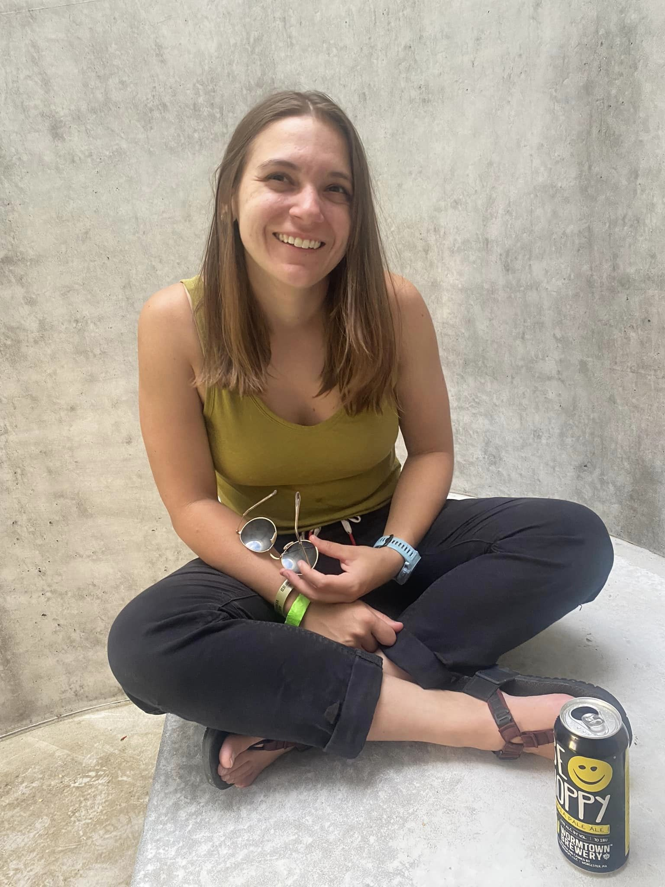

This is Nate, my travel companion. You can read about our never ending quest by bicycle to find the best beer and burritos the world has to offer here.

|
 |
I'm Meg. Activities that bring me joy include: - covering large distances by bicycle - sleeping on the ground in the woods - creating clothing out of string - surfing over pillows of snow - hitting a little white ball around a manicured field - walking to mountain tops - consuming beer & burritos When I'm not doing any of the above, I'm a Software Engineer at Twilio. Currently residing in the White Mountains of beautiful New Hampshire. |
|
This is Nate, my travel companion. You can read about our never ending quest by bicycle to find the best beer and burritos the world has to offer here. |
|